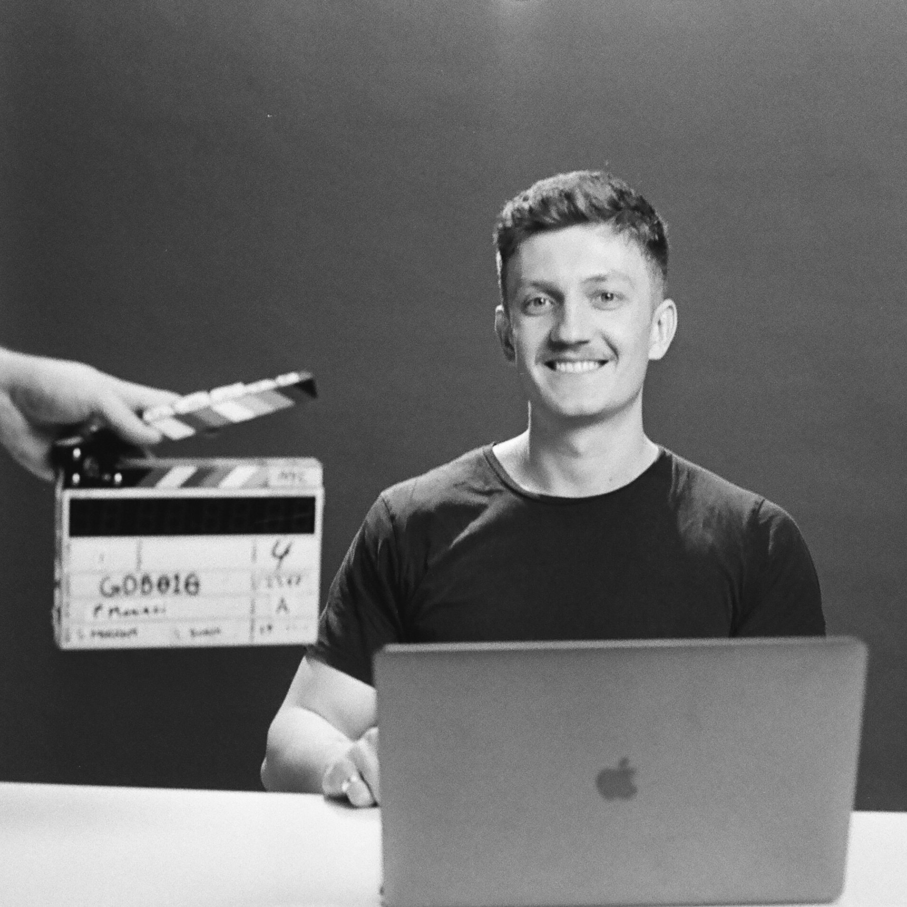
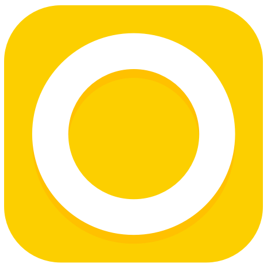
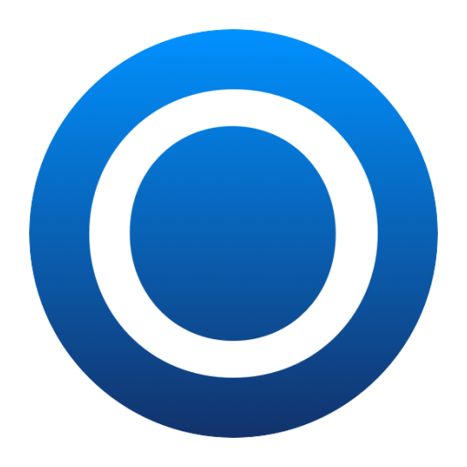
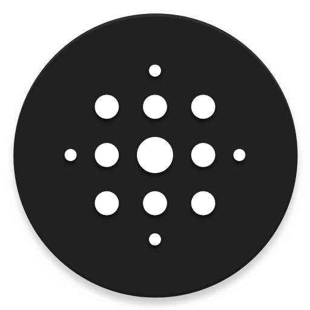
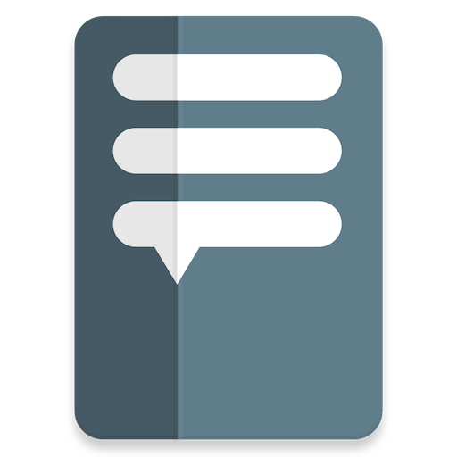

 I'm an Android Engineer and occasional UX/UI designer. I'm based in Munich, Germany and come from Cape Town, South Africa. I currently work at Google as a Developer Relations Engineer for Material Design. I'm passionate about the intersection between code and design. I also strive to contribute to the Android community; I'm a former Google Developer Expert for Android and organizer for GDG Cape Town. I enjoy speaking at conferences, publishing open source code and writing blog posts.
 I was employed at Over from December 2017 to September 2019 and formed part of a small team tasked with building the Android version of their highly succesful iOS app. Over is best described as "Photoshop for your phone", allowing one to layer images, text, drawings, effects and more to create any kind of graphic/media content imaginable.
 I developed the Luno Android app as my full-time job from March 2016 to December 2017. Luno is a Bitcoin/Ethereum wallet and exchange service currently operating in South Africa, Europe, Malaysia, Indonesia, Singapore and Nigeria. Their goal is to "make money frictionless" by providing the best UX for buying, selling, storing, sending and receiving cryptocurrency. To the moon!
I'm developing Rugby Ranker on an ongoing basis as an Android app for viewing and predicting the latest World Rugby rankings 🏉 It displays the latest international rankings, live scores, fixtures, results and news/videos. It makes use of the World Rugby 'Points Exchange' system in order to predict changes in team positions and points. Rugby Ranker attempts to make use of the latest Android libraries and best practices, including Kotlin, Architecture Components and Material Theming. The source code can be found on GitHub.
 I developed Lens Launcher as an entry to the Google IO 2016 Experiments Challenge. I was a runner-up winner and the app is featured on Android Experiments. Lens Launcher is a home screen replacement app that uses an equi-spaced grid and a fisheye lens to provide a unique, novel way to browse and launch your apps. The app has seen great popularity, with over 1 million downloads and many active users. The source code can be found on GitHub.
 I developed ShortStories as an entry to the Google IO 2017 Experiments Challenge. I was a runner-up winner and the app is featured on Android Experiments. ShortStories provides a platform to play text-based games using the various elements of the Android System UI (Notifications, App Shortcuts and Dialogs). The app was inspired by CYOA (Choose Your Own Adventure) books and other forms of interactive fiction. The source code can be found on GitHub.
▪️ "Using Material Tools & Components to design & build a real Android app" at droidcon Kenya 2018 and GDG DevFest South Africa 2018 (YouTube, Speaker Deck)
▪️ "Setting up a Material Components for Android theme" at droidcon Boston 2019 and Google for Startups Accelertator Africa 2020 (Speaker Deck)
▪️ "Incorporating Material Theming into Custom Views" at mDevCamp 2019 and droidcon Berlin 2019 (SlidesLive, Droidcon, Speaker Deck)
▪️ "Complementing your professional journey with community involvement" at GDG DevFest South Africa 2019 and SSA Community Summit 2020 (YouTube 1, YouTube 2, Speaker Deck)
▪️ "Easing in to Material Motion transitions" at droidcon EMEA 2020 (Droidcon, Google Slides)
▪️ "Material Design in Jetpack Compose" at GDG DevFest South Africa 2020 (Google Slides)
I write posts on Android topics I have learnt and am interested in. You can find these over on Medium, some of which have been featured in Android Weekly.
I obtained a BSc in Computer Science (co-majoring in Computer Engineering) from the University of Cape Town in 2015. I code in Kotlin (and Java, when I have to) on a daily basis and strive to keep up to date with latest Android libraries and best practices. I'm also proficient with design tools such as Sketch and Figma.